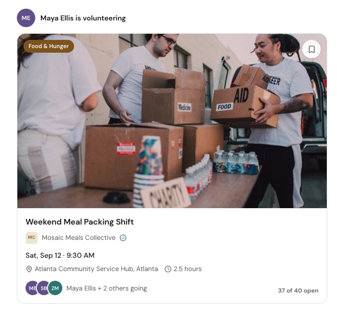
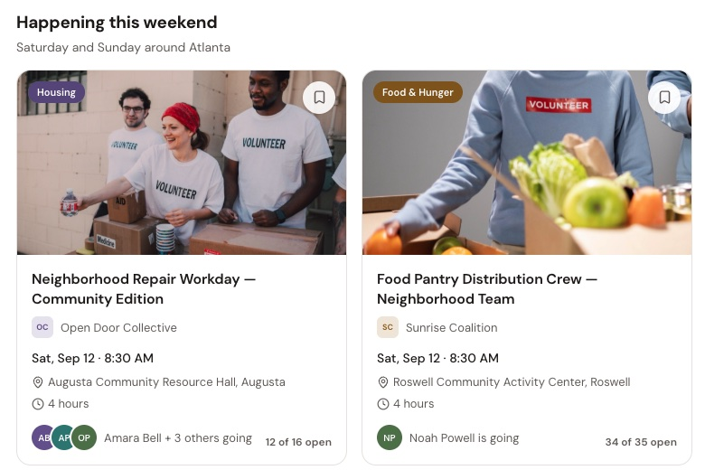

Kynd Independent Product · 2026
A social network for volunteering.
I built Kynd around a simple idea: finding something meaningful to do should feel more like discovering it through your community than searching a directory.
Explore the product (opens in new tab)

Why I built it
Finding a place to volunteer is more fragmented than it should be.
Opportunities are scattered across nonprofit websites, social posts, work, school, and word of mouth.
I kept coming back to a simple question:
If I wanted to do something meaningful this weekend, where would I actually look?
Traditional
- Organization
- Opportunity
- Volunteer
Kynd
- Person
- Community
- Opportunity
- Participation
- History
What I took away
Social discovery should lead to action.
Contribution should feel like history, not a score.
Explore Kynd
(opens in new tab)
Kynd uses a synthetic Atlanta community. Your actions work inside your own temporary demo session.